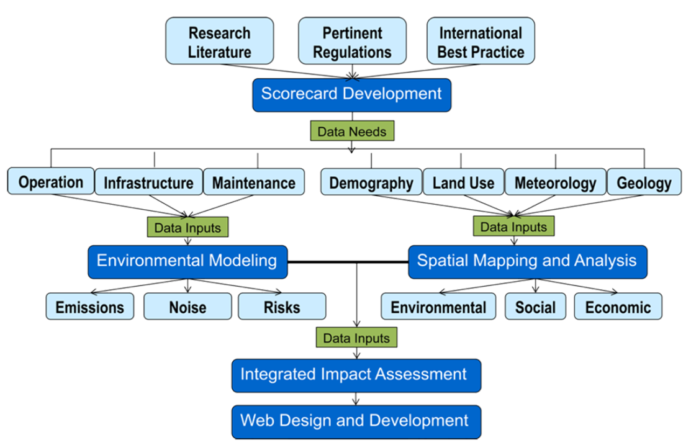

This NURail GIS Project began with the development of the Sustainability Checklist for rail infrastructure. Based on the metrics incorporated in the Checklist, a GIS-based planning database was constructed. The Checklist has been designed to align with U.S. DOT’s strategic goals and the Illinois Livable and Sustainable Transportation Rating System and Guide (“I-LAST”).
NURail Sustainability Checklist:
The Sustainability Checklist provides a systems-based view of rail transport and incorporates state-of-the-art academic research findings, legislation and government guidelines in a comprehensive document. The project has been designed to align with U.S. DOT’s strategic goals: Livable Communities, Safety, Equity and Environmental Sustainability . While this research is limited to the scope of Illinois, the generic framework may be replicable in other regions.
The database currently includes base data and advanced data layers. Base data layers are compiled from existing data provided by multiple agencies, such as DOT, EPA, FRA, and AAR . Advanced data layers, such as air emissions and risks, are modeled and created by our team.
NURail Interactive Map: The database currently includes rail operations, infrastructure and maintenance data; demographics; and land use data. A future version of the database will include meteorological, geologic and benchmarking data. A rail emissions impact analysis model was integrated into the GIS database to visualize air emissions at specific locations along the rail network. Finally, this GIS-based web interface will include a platform to allow users to provide inputs for project-specific impact assessment.